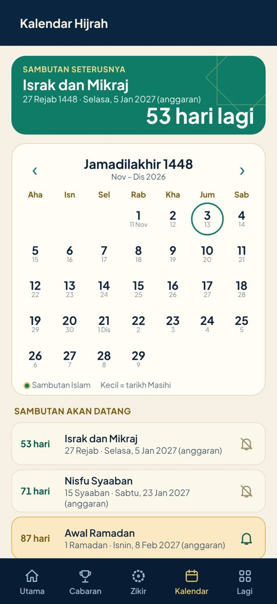
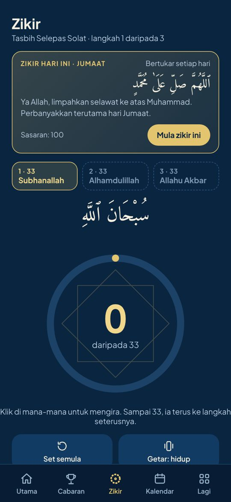
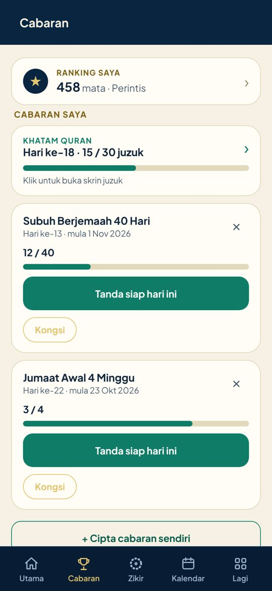
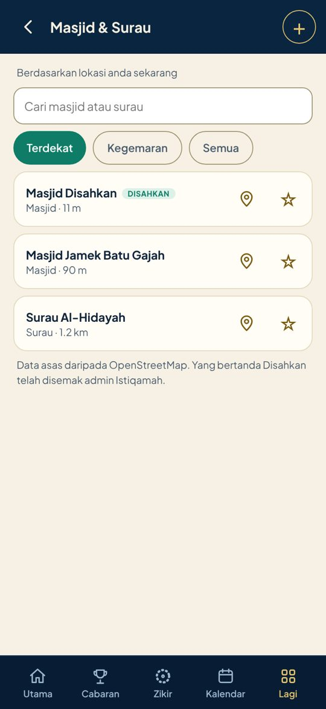
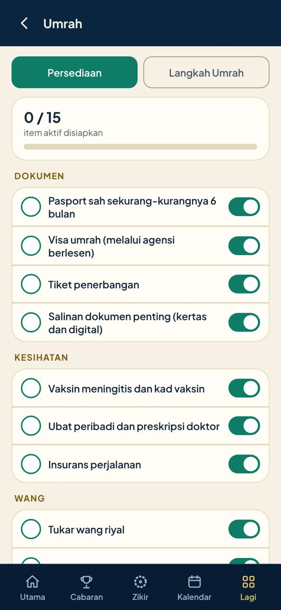

WAKTU SOLATPRAYER TIMES
Fardu dan sunat dalam satu senaraiFard and sunnah in one list
Waktu ikut zon JAKIM, bertukar ikut lokasi anda. Notifikasi ikut pilihan, termasuk Dhuha, Tahajud dan Qiamullail.Times follow the JAKIM zone and change with your location. Choose your notifications, including Duha, Tahajjud and Qiyam al-Layl.

KALENDAR HIJRAHHIJRI CALENDAR
Tarikh Hijrah sebagai utamaHijri dates first
Bulan penuh dengan tanda sambutan Islam. Klik satu tarikh untuk terus ke sambutan itu.A full month with Islamic occasions marked. Tap a date to jump to that occasion.

ZIKIRDHIKR
Kaunter dan tasbih selepas solatCounter and post-prayer tasbih
Pilih zikir harian, kira dengan satu klik dan terus ke langkah seterusnya.Pick your daily dhikr, count with one tap and move on to the next step automatically.

CABARANCHALLENGES
Istiqamah dengan sasaran harianStay steadfast with daily goals
Cabaran, Khatam Quran dan mata ranking peribadi. Semua data kekal pada telefon anda.Challenges, Quran completion and a personal ranking. All data stays on your phone.

MASJID DAN SURAUMOSQUES AND SURAU
Cari yang berdekatanFind the ones nearby
Senarai ikut lokasi, kegemaran dan cadangan tambahan daripada pengguna.A list by location, favourites, and additions suggested by users.

UMRAHUMRAH
Senarai persediaan dan langkahPreparation list and steps
Senarai semak yang boleh disesuaikan, serta panduan langkah umrah.A customisable checklist and a guide to the steps of umrah.
CARA PASANG (1 MINIT)HOW TO INSTALL (1 MINUTE)
1
Muat turun fail APKDownload the APK fileTekan butang di atas. Pelayar mungkin tanya "fail ini boleh membahayakan". Itu amaran biasa untuk semua fail APK.Tap the button above. Your browser may warn that "this file may be harmful". That is the usual warning for every APK file.
2
Buka fail ituOpen the fileAndroid akan minta kebenaran "Pasang dari sumber ini". Tekan Tetapan, hidupkan, kemudian kembali.Android will ask to allow "Install from this source". Tap Settings, switch it on, then go back.
3
Jika Play Protect beri amaranIf Play Protect shows a warningPilih "Lagi terperinci" lalu "Pasang juga". Ini kerana app belum ada di Play Store, bukan kerana ada masalah.Choose "More details" then "Install anyway". This is because the app is not on the Play Store yet, not because something is wrong.
4
Buka IstiqamahOpen IstiqamahBenarkan lokasi dan notifikasi supaya waktu solat dan peringatan berfungsi.Allow location and notifications so prayer times and reminders work.
KENAPA SELAMATWHY IT IS SAFE
✓Tiada akaun, tiada iklanNo account, no adsTidak perlu daftar atau log masuk.No sign-up or login needed.
✓LokasiLocationHanya untuk cari zon waktu solat JAKIM yang terdekat dan arah kiblat. Kedudukan tidak dihantar ke mana-mana pelayan.Only to find the nearest JAKIM prayer-time zone and the qibla direction. Your position is not sent to any server.
✓Kiraan tanpa namaAnonymous countSatu isyarat sehari tanpa nama, emel, lokasi atau ID peranti, untuk mengira bilangan peranti aktif. Boleh dimatikan dalam Tetapan.One signal a day with no name, email, location or device ID, only to count active devices. It can be switched off in Settings.
✓Notifikasi dan penggeraNotifications and alarmsUntuk ingatkan waktu solat dan sambutan.To remind you of prayer times and occasions.
✓InternetAmbil jadual waktu solat JAKIM dan semak versi baharu.To fetch the JAKIM prayer-time schedule and check for new versions.
✓Kod boleh disemakCode you can inspectKod sumber terbuka di GitHub. Fail APK dibina automatik oleh GitHub, bukan dari komputer peribadi.The source code is open on GitHub. The APK is built automatically by GitHub, not on a personal computer.
PEMBUATMAKER
Dibuat oleh Farid (FaridAssamani) sebagai app peribadi dan dikongsi percuma. Cadangan dan maklum balas boleh dihantar dalam app.Made by Farid (FaridAssamani) as a personal app and shared for free. Suggestions and feedback can be sent from inside the app.
UNTUK YANG TELITIFOR THE CAREFUL
Checksum SHA-256 akan dipaparkan di sini.The SHA-256 checksum will be shown here.
Imbas untuk buka halaman iniScan to open this page
Buat masa ini untuk Android sahaja. Versi iPhone belum ada.Android only for now. There is no iPhone version yet.